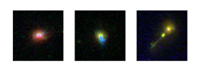

January 9, 2008
|
+ enlarge  |
|
These pictures show galaxies that host three of the hidden quasars found in the Sloan Digital Sky Survey (SDSS-II) sample. In every image, the quasar is at the center of the galaxy, but our view to it is obscured by dust.
In the central image, the blue patches of light serve as an indirect indicator of the hidden quasar in the center of the galaxy. The same signature, although fainter, can be seen in the image on the left. The unusual shape of the right-most galaxy indicates that this object is undergoing interactions with a smaller galaxy that is being ripped apart. These images were obtained using the Advanced Camera for Surveys onboard the Hubble Space Telescope. (Credit - SDSS Collaboration, Nadia Zakamska, Institute for Advanced Study) |
Powered by glowing, super-heated gas as it swirls into black holes a billion times more massive than the sun, quasars are the most brilliantly luminous objects in the universe. But a new study from the Sloan Digital Sky Survey (SDSS-II) shows that many of the most energetic quasars are hidden from our view by clouds of gas and dust that block the central black hole.
The brightest quasars are more than a hundred times as luminous as the entire Milky Way galaxy, so telescopes collecting data out to the far edge of the observable universe can detect their visible light.
Surveys sensitive to infrared and X-ray emissions had shown that the visible light from the less energetic quasars is often obscured by dust, making them hard to identify with regular astronomical telescopes. However, because of their relatively small size, these surveys contained only a handful of the rarest, most energetic quasars, powered by the biggest black holes.
Using a distinctive spectral signature that even highly obscured quasars show as a marker, the SDSS-II team sifted through more than a million spectra to discover 887 hidden quasars, by far the largest sample of these objects ever found. "A large survey like SDSS-II is important because quasars are about 10,000 times rarer than are normal galaxies," explained Reinabelle Reyes of Princeton University. Reyes is the lead author of a paper describing the results entitled "Space Density of Optically-Selected Type 2 Quasars," presented today at the American Astronomical Society meeting in Austin, Texas and submitted for publication in the Astronomical Journal.
"We determined how common hidden quasars are, especially the most luminous ones. Perhaps more interestingly, we determined how common they are relative to normal quasars," said team member Nadia Zakamska, a NASA Spitzer Fellow at the Institute for Advanced Study in Princeton.
"We found that hidden quasars make up at least half of the quasars in the relatively recent Universe, implying that most of the powerful black holes in our neighborhood had previously been unrecognized."
Michael Strauss of Princeton University explained that powerful black holes are more common in the last eight billion years of cosmic history than had previously been thought. "Moreover, because the light from these hidden quasars had previously been unaccounted for, black holes turn out to be more efficient in converting the energy of in-falling matter into light than we had thought."
This result also has implications for theoretical models of quasars. "The relative numbers of hidden versus normal quasars tell us something about how dust and gas are typically distributed around these objects," explained Julian Krolik, a collaborator from Johns Hopkins University. "If the dust covers a large fraction of the area around a black hole, this object would more likely appear as a hidden quasar. So the large number of hidden quasars discovered by the SDSS team implies that most of the light emitted by quasars is actually obscured."